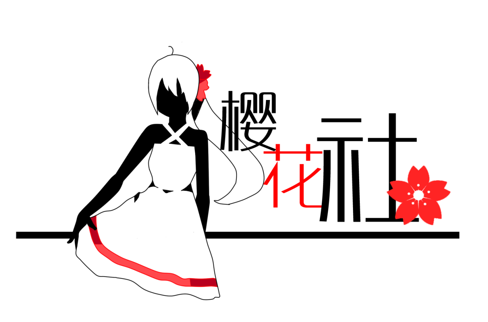
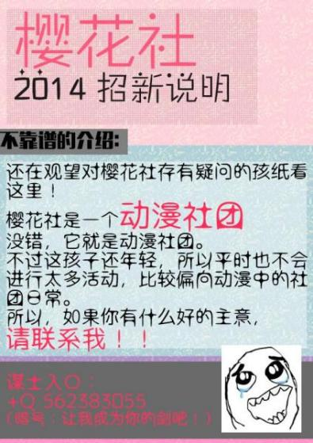
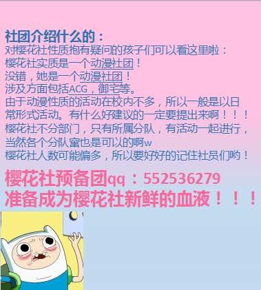
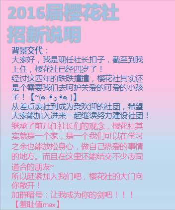
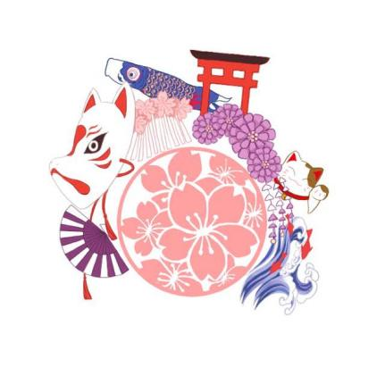

历久弥新 · 记录科高樱花社的点点滴滴
樱花社于2013年（创校第二年）建立。此时社团设立了三个部门：绘画部、策划部、cos部。每周各部门开展一次活动，氛围轻松自由。
首任社长为贴吧用户“沐七NANA”，绘画部部长为“紫色倒皇冠”，cos部部长为“兰o科”。此时社团位于国际体系一楼的日本文化体验教室，配备了日式榻榻米活动室。

14年8月，正式确定由“猫君”设计的社徽，持续沿用至2026年，成为社团极具意义的标志。
同年招新宣传语极具时代特色：“找绅士，找秀吉，到科高樱花社！国家优质机构，实行国家3个1政策，是你值得信赖的不二之选！”

时任社长“扣子”发表招新说明，回顾了樱花社四年的跌跌撞撞，将其比作“需要关怀的可爱小宝宝”，并号召大家加入QQ群（552536279）一起建设社团。


暑假期间，伴随社团多年的日式榻榻米活动室被拆除（默哀10秒）。
尽管如此，社团依然活跃。在当年的社团展演上，樱花社带来了长达8分钟的“极乐净土”宅舞表演（B站视频：BV1Rx411v7wt）。
学校涌现出ACG视频录制社、阿瓦隆史学社、ACG社等竞品/同类社团。樱花社曾发起ACG社团合作组团，组织跨社活动，虽最终因种种原因未能如愿，但这几年是社团活动最丰富多彩的“百花齐放”时代。
22-25年期间，社团发展严重受阻，部门发展停滞，难以自主选择社员。受外部环境影响，校内对ACG文化打击严重，社团进入“至暗时刻”。
在此期间，仅维持百团大战等极少数活动，多次展演与线下聚集被迫取消。
在5月的游园会上，樱花社摊位大放异彩，现场售卖周边与零食，最终使得社存款突破两千元大关！
樱花社仍在继续前行。新的社徽、新的期许，欢迎所有热爱 ACGN 的同学加入。

| 年份 | 姓名 | 备注 |
|---|---|---|
| 2013 - ? | 李银华 | 首届指导老师，日语老师 |
| ? - 2023 | 洪熙惠 | 日语老师（已不在科高） |
| 2023 - 至今 | 申旭 | 北师大世界史硕士，资深养猫专业户 |
| 年份 | 社长/主要负责人 |
|---|---|
| 2013 | 沐七NANA（首任社长） |
| 2014 | 七染风 |
| 2015 | Xx、Berserk Miyuki |
| 2016 | 澄 |
| 2021 | 熊社长猫猫 |
| 2022 | 黄社长kksk、陈部长、林部长、黄部长等 |
| 2023 | 轩酒小灯、胧月、水水、章鱼等 |
| 2024 | 李社长 李泽天胤 |
| 2025 | 蔡社长 Reverie、姚财务、陈秘书等 |
| 2026 | 许社长 Cyan、汪秘书 |